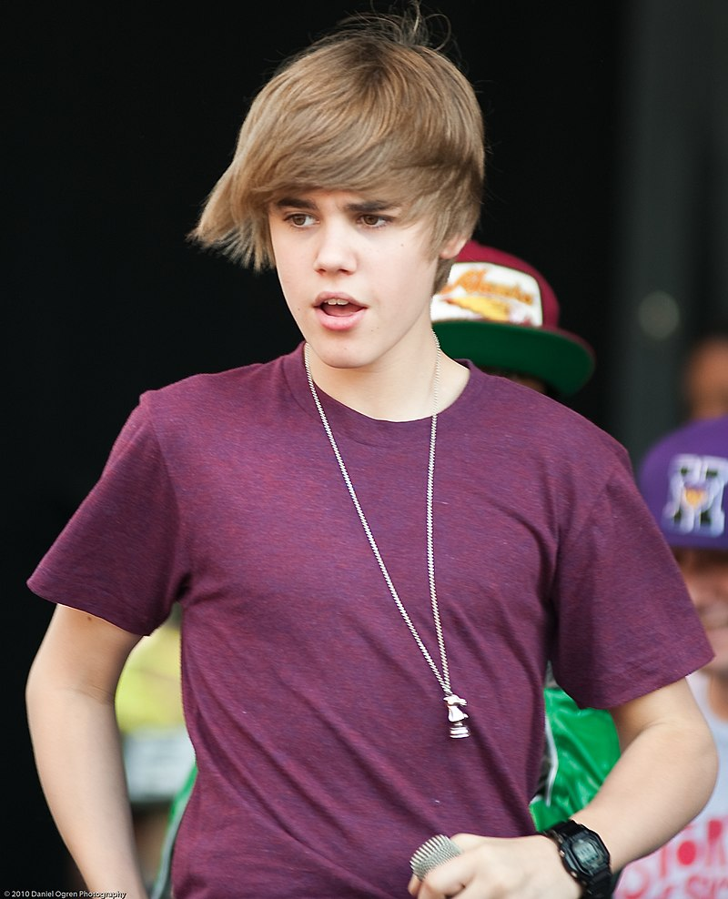

| Foundation | At age 13, Bieber went to Atlanta with Braun to record demo tapes. Bieber began singing for Usher one week later. Bieber was soon signed to Raymond Braun Media Group (RBMG), a joint venture between Braun and Usher. | |
|---|---|---|
| Famous | In January 2010, "Baby" was released from his debut album My World 2.0. The song featured Ludacris, and became an international hit. It charted at number five on the US Billboard Hot 100, peaked at number three on the Canadian Hot 100 and reached the top ten in several international markets.Two promo singles, "Never Let You Go" and "U Smile", were top 30 hits on the US Hot 100, and top 20 hits in Canada.According to review aggregator Metacritic, the album has received generally favourable reviews.It debuted at number one on the US Billboard 200, making Bieber the youngest solo male act to top the chart since Stevie Wonder in 1963. My World 2.0 also debuted at number one on the Canadian Albums Chart, Irish Albums Chart, Australian Albums Chart, and the New Zealand Albums Chart and reached the top 10 of fifteen other countries. |  | album | Later in 2010 Bieber released the album My Worlds Acoustic, featuring stripped-down versions of his songs, and published an autobiographical book, Justin Bieber: First Step 2 Forever: My Story. Justin Bieber: Never Say Never, a documentary film interspersed with 3-D concert footage, opened the following year. Bieber maintained his visibility with the albums Never Say Never: The Remixes (2011), a companion to the film, and the Christmas-themed Under the Mistletoe (2011), both of which hit number one in the United States and Canada. On the similarly successful Believe (2012) and Believe Acoustic (2013), Bieber introduced a more mature sound, with the hit single “Boyfriend” recalling the suave R&B of Justin Timberlake. |